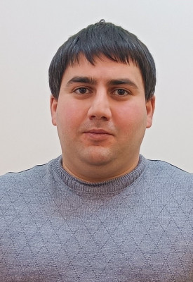

Обо мне

Манвел Каренович Арутюнян — учитель информатики и математики в МАОУ СОШ №8 с УИМ и АЯ города Боровичи.
Образование и карьера
Окончил Российский государственный университет имени А. И. Герцена в Санкт-Петербурге по направлению «Прикладная математика и информатика». Вернувшись в родной город, начал работать в школе, которую сам окончил в 2012 году.
За последние три года прошёл курсы повышения квалификации, в том числе по теме реализации требований обновлённых ФГОС в работе учителя. Стаж работы по специальности — 5 лет.
Педагогическая деятельность
Преподаю информатику и математику. Считаю, что на уроках дисциплина — это основа, которая помогает поддерживать внимание учеников и добиваться хороших результатов.
В работе активно использую современные технологии: в школе в рамках проекта «Точка роста» кабинет информатики оснащён 3D-принтерами, квадрокоптерами и другим оборудованием. Обучаю детей работе с этими инструментами.
Во время проведения ЕГЭ обеспечиваю техническую поддержку компьютерных систем. Кроме того, выступаю наставником для учеников.
Классное руководство
Классный руководитель 8К класса (космического).
Профессиональные интересы
Проектная деятельность с учениками, современные технологии в образовании, робототехника, 3D-моделирование, VR, пилотирование квадрокоптеров, использование искусственного интеллекта в образовательных целях.